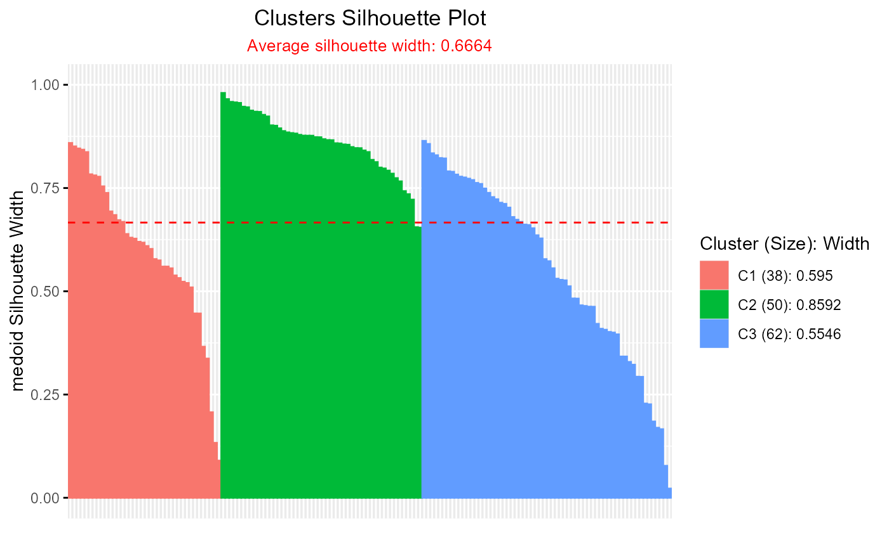

Silhouette.RdComputes the silhouette width for each observation based on clustering results, measuring how similar an observation is to its own cluster compared to nearesh neighbour cluster. The silhouette width ranges from -1 to 1, where higher values indicate better cluster cohesion and separation.
Silhouette(
prox_matrix,
proximity_type = c("dissimilarity", "similarity"),
method = c("medoid", "pac"),
prob_matrix = NULL,
a = 2,
sort = FALSE,
print.summary = TRUE,
clust_fun = NULL,
...
)
# S3 method for class 'Silhouette'
plot(x, label = FALSE, summary.legend = TRUE, grayscale = FALSE, ...)
# S3 method for class 'Silhouette'
summary(object, print.summary = TRUE, ...)A numeric matrix where rows represent observations and columns represent proximity measures (e.g., distances or similarities) to clusters. Typically, this is a membership or dissimilarity matrix from clustering results. If clust_fun is provided, prox_matrix should be the name of the matrix component as a string (e.g., if clust_fun = fcm from ppclust package the prox_matrix = "d").
Character string specifying the type of proximity measure in prox_matrix. Options are "similarity" (higher values indicate closer proximity) or "dissimilarity" (lower values indicate closer proximity). Defaults to "dissimilarity".
Character string specifying the silhouette calculation method. Options are "pac" (Probability of Alternative Cluster) or "medoid". Defaults to "medoid".
A numeric matrix where rows represent observations and columns represent cluster membership probabilities, depending on prob_type). If clust_fun is provided, prob_matrix should be the name of the matrix component as a string (e.g., "u" for fcm). When not NULL, fuzzy silhouette width is calculated. Defaults to NULL for crisp silhouette.
Numeric value controlling the fuzzifier or weight scaling in fuzzy silhouette averaging. Higher values increase the emphasis on strong membership differences. Must be positive. Defaults to 2.
Logical; if TRUE, sorts the output widths data frame by cluster and descending silhouette width. Defaults to FALSE.
Logical; if TRUE, prints a summary table of average silhouette widths and sizes for each cluster. Defaults to TRUE.
Optional S3 or S4 function object or function as character string specifying a clustering function that produces the proximity measure matrix. For example, fcm or "fcm". If provided, prox_matrix must be the name of the matrix component in the clustering output (e.g., "d" for fcm when proximity_type = "dissimilarity"). Defaults to NULL.
Additional arguments passed to clust_fun, such as x,centers for fcm.
An object of class "Silhouette", typically the output of the Silhouette and softSilhouette function. Also supports objects classes eclust, hcut, pam, clara, fanny, or silhouette from cluster, factoextra packages. For these classes, explicitly call plotSilhouette() to generate the plot.
Logical; if TRUE, the x-axis is labeled with observation row indices from the input data and titled "Row Index". Defaults to FALSE.
Logical; if TRUE, prints a summary of average silhouette widths and sizes for each cluster in legend ("Cluster (Size): Width"). If FALSE, the legend shows only cluster numbers. Defaults to TRUE.
Logical; if TRUE, the plot uses a grayscale color palette for clusters. If FALSE, uses the default or specified color palette. Defaults to FALSE.
An object of class "Silhouette", typically the output of the Silhouette and softSilhouette function.
A data frame of class "Silhouette" containing cluster assignments, nearest neighbor clusters, silhouette widths for each observation, and weights (for fuzzy clustering). The object includes the following attributes:
The proximity type used ("similarity" or "dissimilarity").
The silhouette calculation method used ("medoid" or "pac").
Further, summary returns a list containing:
clus.avg.widths: A named numeric vector of average silhouette widths per cluster.
avg.width: The overall average silhouette width.
sil.sum: A data frame with columns cluster, size, and avg.sil.width summarizing cluster sizes and average silhouette widths.
The Silhouette function employs the Simplified Silhouette method introduced by Van der Laan et al. (2003),
differing from the original silhouette method proposed by Rousseeuw (1987).
It evaluates clustering quality using a proximity matrix, denoted as \(\Delta = [\delta_{ik}]_{n \times K}\) for dissimilarity measures or \(\Delta' = [\delta'_{ik}]_{n \times K}\) for similarity measures. Here, \(i = 1, \ldots, n\) represents the number of observations, and \(k = 1, \ldots, K\) denotes the number of clusters. The elements \(\delta_{ik}\) indicate dissimilarity (e.g., distance) between observation \(i\) and cluster \(k\), while \(\delta'_{ik}\) represent similarity between observation \(i\) and cluster \(k\).
The silhouette width \(S(x_i)\) for observation \(i\) is calculated based on the proximity type.
For dissimilarity measures: $$ S(x_i) = \dfrac{(\min_{k' \neq k} \delta_{ik'}) - \delta_{ik}}{N(x_i)}, $$ where \(\min_{k' \neq k} \delta_{ik'}\) is the smallest dissimilarity to any other cluster \(k' \neq k\).
For similarity measures: $$ S(x_i) = \dfrac{\delta'_{ik} - (\max_{k' \neq k} \delta'_{ik'})}{N(x_i)}, $$ where \(\max_{k' \neq k} \delta'_{ik'}\) is the largest similarity to any other cluster, and \(N(x_i)\) is the normaliser.
The Normaliser depends on the method argument:
For medoid:
Dissimilarity: \(\max(\delta_{ik}, \min_{k' \neq k} \delta_{ik'})\)
Similarity: \(\max(\delta'_{ik}, \max_{k' \neq k} \delta'_{ik'})\)
For pac:
Dissimilarity: \(\delta_{ik} + \min_{k' \neq k} \delta_{ik'}\)
Similarity: \(\delta'_{ik} + \max_{k' \neq k} \delta'_{ik'}\)
When prob_matrix is NULL, the function computes the crisp overall silhouette index \(CS\) as:
$$
CS = \frac{1}{n} \sum_{i=1}^{n} S(x_i).
$$
This represents the average silhouette width across all observations, providing a measure of overall clustering quality.
If prob_matrix is provided, it is denoted as \(\Gamma = [\gamma_{ik}]_{n \times K}\),
where \(\gamma_{ik}\) represents the membership probability of observation \(i\) to cluster \(k\).
The fuzzy silhouette index \(FS\) is then calculated as:
$$
FS = \frac{\sum_{i=1}^{n} \left( \gamma_{ik} - \max_{k' \neq k} \gamma_{ik'} \right)^{\alpha} S(x_i)}
{\sum_{i=1}^{n} \left( \gamma_{ik} - \max_{k' \neq k} \gamma_{ik'} \right)^{\alpha}},
$$
where \(\alpha\) (set by the argument a) controls the weighting based on membership differences.
Higher \(\alpha\) values emphasize observations with more confident cluster assignments,
accounting for uncertainty in fuzzy clustering.
Rousseeuw, P. J. (1987). Silhouettes: A graphical aid to the interpretation and validation of cluster analysis. Journal of Computational and Applied Mathematics, 20, 53–65. doi:10.1016/0377-0427(87)90125-7
Van der Laan, M., Pollard, K., & Bryan, J. (2003). A new partitioning around medoids algorithm. Journal of Statistical Computation and Simulation, 73(8), 575–584. doi:10.1080/0094965031000136012
Raymaekers, J., & Rousseeuw, P. J. (2022). Silhouettes and quasi residual plots for neural nets and tree-based classifiers. Journal of Computational and Graphical Statistics, 31(4), 1332–1343. doi:10.1080/10618600.2022.2050249
Campello, R. J., & Hruschka, E. R. (2006). A fuzzy extension of the silhouette width criterion for cluster analysis. Fuzzy Sets and Systems, 157(21), 2858–2875. doi:10.1016/j.fss.2006.07.006
Bhat Kapu, S., & Kiruthika. (2024). Some density-based silhouette diagnostics for soft clustering algorithms. Communications in Statistics: Case Studies, Data Analysis and Applications, 10(3-4), 221-238. doi:10.1080/23737484.2024.2408534
# Standard silhouette with k-means on iris dataset
data(iris)
# Crisp Silhouette with k-means
out = kmeans(iris[,-5],3)
if (requireNamespace("ppclust", quietly = TRUE)) {
library(proxy)
dist = proxy::dist(iris[,-5],out$centers)
silh_out = Silhouette(dist)
plot(silh_out)
} else {
message("Install 'ppclust': install.packages('ppclust')")
}
#> -----------------------------------------------
#> Average dissimilarity medoid silhouette: 0.6664
#> -----------------------------------------------
#> cluster size avg.sil.width
#> 1 1 50 0.8592
#> 2 2 38 0.5950
#> 3 3 62 0.5546
#>
#> Available attributes:
#> [1] "names" "class" "row.names" "proximity_type"
#> [5] "method"

# \donttest{
# Scree plot for optimal clusters (2 to 7)
if (requireNamespace("ppclust", quietly = TRUE)) {
library(ppclust)
avg_sil_width <- numeric(6)
for (k in 2:7) {
out <- Silhouette(
prox_matrix = "d",
proximity_type = "dissimilarity",
prob_matrix = "u",
clust_fun = ppclust::fcm,
x = iris[, 1:4],
centers = k,
print.summary = FALSE,
sort = TRUE
)
# Compute average silhouette width from widths
avg_sil_width[k-1] = summary(out,print.summary = FALSE)$avg.width
}
plot(avg_sil_width,
type = "o",
ylab = "Overall Silhouette Width",
xlab = "Number of Clusters",
main = "Scree Plot"
)
} else {
message("Install 'ppclust': install.packages('ppclust')")
}
# }